Chapter 16
Pseudo-Random-Sequence Generators and Stream Ciphers
16.1 Linear Congruential Generators
Linear congruential generators are pseudo-random-sequence generators of the form
Xn = (aXn-1 + b) mod m
in which Xn is the n th number of the sequence, and Xn-1 is the previous number of the sequence. The variables a, b, and m are constants: a is the multiplier, b is the increment, and m is the modulus. The key, or seed, is the value of X0.
This generator has a period no greater than m. If a, b, and m are properly chosen, then the generator will be a maximal period generator (sometimes called maximal length) and have period of m. (For example, b should be relatively prime to m.) Details on choosing constants to ensure maximal period can be found in [863,942]. Another good article on linear congruential generators and their theory is [1446].
Table 16.1, taken from [1272], gives a list of good constants for linear congruential generators. They all produce maximal period generators and even more important, pass the spectral test for randomness for dimensions 2, 3, 4, 5, and 6 [385,863]. They are organized by the largest product that does not overflow a specific word length.
| Overflow At: | a | b | m |
|---|---|---|---|
| 220 | 106 | 1283 | 6075 |
| 221 | 211 | 1663 | 7875 |
| 222 | 421 | 1663 | 7875 |
| 223 | 430 | 2531 | 11979 |
| 936 | 1399 | 6655 | |
| 1366 | 1283 | 6075 | |
| 224 | 171 | 11213 | 53125 |
| 859 | 2531 | 11979 | |
| 419 | 6173 | 29282 | |
| 967 | 3041 | 14406 | |
| 225 | 141 | 28411 | 134456 |
| 625 | 6571 | 31104 | |
| 1541 | 2957 | 14000 | |
| 1741 | 2731 | 12960 | |
| 1291 | 4621 | 21870 | |
| 205 | 29573 | 139968 | |
| 226 | 421 | 17117 | 81000 |
| 1255 | 6173 | 29282 | |
| 281 | 28411 | 134456 | |
| 227 | 1093 | 18257 | 86436 |
| 421 | 54773 | 259200 | |
| 1021 | 24631 | 116640 | |
| 1021 | 25673 | 121500 | |
| 228 | 1277 | 24749 | 117128 |
| 741 | 66037 | 312500 | |
| 2041 | 25673 | 121500 | |
| 229 | 2311 | 25367 | 120050 |
| 1807 | 45289 | 214326 | |
| 1597 | 51749 | 244944 | |
| 1861 | 49297 | 233280 | |
| 2661 | 36979 | 175000 | |
| 4081 | 25673 | 121500 | |
| 3661 | 30809 | 145800 | |
| 230 | 3877 | 29573 | 139968 |
| 3613 | 45289 | 214326 | |
| 1366 | 150889 | 714025 | |
| 231 | 8121 | 28411 | 134456 |
| 4561 | 51349 | 243000 | |
| 7141 | 54773 | 259200 | |
| 232 | 9301 | 49297 | 233280 |
| 4096 | 150889 | 714025 | |
| 233 | 2416 | 374441 | 1771875 |
| 234 | 17221 | 107839 | 510300 |
| 36261 | 66037 | 312500 | |
| 235 | 84589 | 45989 | 217728 |
The advantage of linear congruential generators is that they are fast, requiring few operations per bit.
Unfortunately, linear congruential generators cannot be used for cryptography; they are predictable. Linear congruential generators were first broken by Jim Reeds [1294,1295,1296] and then by Joan Boyar [1251]. She also broke quadratic generators:
n = (aXn-12 + bXn-1 + c) mod m
and cubic generators:
n = (aXn-13 + bXn-12 + cXn-1 + d) mod m
Other researchers extended Boyar’s work to break any polynomial congruential generator [923,899,900]. Truncated linear congruential generators were also broken [581,705,580], as were truncated linear congruential generators with unknown parameters [1500,212]. The preponderance of evidence is that congruential generators aren’t useful for cryptography.
Linear congruential generators remain useful for noncryptographic applications, however, such as simulations. They are efficient and show good statistical behavior with respect to most reasonable empirical tests. Considerable information on linear congruential generators and their implementations can be found in [942].
Combining Linear Congruential Generators
Various people examined the combination of linear congruential generators [1595,941]. The results are no more cryptographically secure, but the combinations have longer periods and perform better in some randomness tests.
Use this generator for 32-bit computers [941]:
static long s1 = 1 ; /* A "long" must be 32 bits long. */
static long s2 = 1 ;
#define MODMULT(a,b,c,m,s) q = s/a; s = b*(s-a*q) - c*q; if (s<0) s+=m ;
/* MODMULT(a,b,c,m,s) computes s*b mod m,
provided that m=a*b+c and 0 <= c < m. */
/* combinedLCG returns a pseudorandom real value in the range
* (0,1). It combines linear congruential generators with
* 31 31
* periods of 2 -85 and 2 -249, and has a period that is the
* product of these two prime numbers. */
double combinedLCG ( void )
{
long q ;
long z ;
MODMULT ( 53668, 40014, 12211, 2147483563L, s1 )
MODMULT ( 52774, 40692, 3791, 2147483399L, s2 )
z = s1 - s2 ;
if ( z < 1 )
z += 2147483562 ;
return z * 4.656613e-10 ;
}
/* In general, call initLCG before using combinedLCG. */
void initLCG ( long InitS1, long InitS2 )
{
s1 = InitS1 ;
s2 = InitS2 ;
}
This generator works as long as the machine can represent all integers between -231 + 85 and 231 - 85. The variables, s1 and s2, are global; they hold the current state of the generator. Before the first call, they must be initialized. The variable s1 needs an initial value between 1 and 2147483562; the variable s2 needs an initial value between 1 and 2147483398. The generator has a period somewhere in the neighborhood of 1018.
If you only have a 16-bit computer, use this generator instead:
static int s1 = 1 ; /* An "int" must be 16 bits long. */
static int s2 = 1 ;
static int s3 = 1 ;
#define MODMULT(a,b,c,m,s) q = s/a; s = b*(s-a*q) - c*q; if (s<0) s+=m ;
/* combined LCG returns a pseudorandom real value in the range
* (0,1). It combines linear congruential generators with
* 15 15 15
* periods of 2 -405, 2 -1041, and 2 -1111, and has a period
* that is the product of these three prime numbers. */
double combinedLCG ( void )
{
int q ;
int z ;
MODMULT ( 206, 157, 21, 32363, s1 )
MODMULT ( 217, 146, 45, 31727, s2 )
MODMULT ( 222, 142, 133, 31657, s3 )
z = s1 - s2 ;
if ( z > 706 )
z -= 32362 ;
z += s3 ;
if ( z < 1 )
z += 32362 ;
return z * 3.0899e-5 ;
}
/* In general, call initLCG before using combinedLCG. */
void initLCG ( int InitS1, int InitS2, InitS3 )
{
s1 = InitS1 ;
s2 = InitS2 ;
s3 = InitS3 ;
}
This generator works as long as the machine can represent all integers between -32363 and 32363. The variables, s1, s2, and s3, are global; they hold the current state of the generator. Before the first call, they must be initialized. The variable s1 needs an initial value between 1 and 32362. The variable s2 needs an initial value between 1 and 31726. The variable s3 needs an initial value between 1 and 31656. This generator has a period of 1.6*1013.
For both of these generators, the constant term b in the linear congruence is 0.
16.2 Linear Feedback Shift Registers
Shift register sequences are used in both cryptography and coding theory. There is a wealth of theory about them; stream ciphers based on shift registers have been the workhorse of military cryptography since the beginnings of electronics.
A feedback shift register is made up of two parts: a shift register and a feedback function (see Figure 16.1). The shift register is a sequence of bits. (The length of a shift register is figured in bits; if it is n bits long, it is called an n-bit shift register.) Each time a bit is needed, all of the bits in the shift register are shifted 1 bit to the right. The new left-most bit is computed as a function of the other bits in the register. The output of the shift register is 1 bit, often the least significant bit. The period of a shift register is the length of the output sequence before it starts repeating.
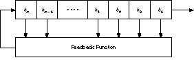
Figure 16.1 Feedback shift register.
Cryptographers have liked stream ciphers made up of shift registers: They are easily implemented in digital hardware. I will only touch on the mathematical theory. Ernst Selmer, the Norwegian government’s chief cryptographer, worked out the theory of shift register sequences in 1965 [1411]. Solomon Golomb, an NSA mathematician, wrote a book with Selmer’s results and some of his own [643]. See also [970,971,1647].
The simplest kind of feedback shift register is a linear feedback shift register, or LFSR (see Figure 16.2). The feedback function is simply the XOR of certain bits in the register; the list of these bits is called a tap sequence. Sometimes this is called a Fibonacci configuration. Because of the simple feedback sequence, a large body of mathematical theory can be applied to analyzing LFSRs. Cryptographers like to analyze sequences to convince themselves that they are random enough to be secure. LFSRs are the most common type of shift registers used in cryptography.
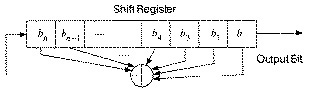
Figure 16.2 Linear feedback shift register.
Figure 16.3 is a 4-bit LFSR tapped at the first and fourth bit. If it is initialized with the value 1111, it produces the following sequence of internal states before repeating:
1 1 1 1 0 1 1 1 1 0 1 1 0 1 0 1 1 0 1 0 1 1 0 1 0 1 1 0 0 0 1 1 1 0 0 1 0 1 0 0 0 0 1 0 0 0 0 1 1 0 0 0 1 1 0 0 1 1 1 0
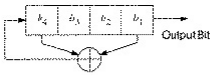
Figure 16.3 4-bit LFSR.
The output sequence is the string of least significant bits:
1 1 1 1 0 1 0 1 1 0 0 1 0 0 0 ....
An n-bit LFSR can be in one of 2n - 1 internal states. This means that it can, in theory, generate a 2n - 1 bit-long pseudo-random sequence before repeating. (It’s 2n - 1 and not 2n because a shift register filled with zeros will cause the LFSR to output a neverending stream of zeros — this is not particularly useful.) Only LFSRs with certain tap sequences will cycle through all 2n - 1 internal states; these are the maximal-period LFSRs. The resulting output sequence is called an m-sequence.
In order for a particular LFSR to be a maximal-period LFSR, the polynomial formed from a tap sequence plus the constant 1 must be a primitive polynomial mod 2. The degree of the polynomial is the length of the shift register. A primitive polynomial of degree n is an irreducible polynomial that divides x2n-1 + 1, but not xd + 1 for any d that divides 2n - 1 (see Section 11.3). For the mathematical theory behind all this, consult [643,1649,1648].
In general, there is no easy way to generate primitive polynomials mod 2 for a given degree. The easiest way is to choose a random polynomial and test whether it is primitive. This is complicated — something like testing random numbers for primality — but many mathematical software packages do this. See [970,971] for some methods.
Table 16.2 lists some, but by no means all, primitive polynomials mod 2 of varying degrees [1583,643,1649,1648,1272,691]. For example, the listing (32, 7, 5, 3, 2, 1, 0) means that the following polynomial is primitive modulo 2:
x32 + x7 + x5 + x3 + x2 + x + 1
It’s easy to turn this into a maximal-period LFSR. The first number is the length of the LFSR. The last number is always 0 and can be ignored. All the numbers, except the 0, specify the tap sequence, counting from the left of the shift register. That is, low degree terms in the polynomial correspond to taps near the left-hand side of the register.
To continue the example, the listing (32, 7, 5, 3, 2, 1, 0) means that if you take a 32-bit shift register and generate the new bit by XORing the thirty-second, seventh, fifth, third, second, and first bits together (see Figure 16.4), the resultant LFSR will be maximal length; it will cycle through 232 - 1 values before repeating.
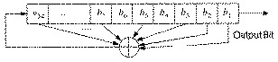
Figure 16.4 32-bit long maximal-length LFSR.
The C code for this LFSR looks like:
int LFSR () {
static unsigned long ShiftRegister = 1; /* Anything but 0. */
ShiftRegister = ((((ShiftRegister >> 31)
^ (ShiftRegister >> 6)
^ (ShiftRegister >> 4)
^ (ShiftRegister >> 2)
^ (ShiftRegister >> 1)
^ ShiftRegister))
& 0x00000001)
<< 31)
| (ShiftRegister >> 1) ;
return ShiftRegister & 0x00000001;
}
| (1, 0) | (36, 11, 0) | (68, 9, 0) | (97, 6, 0) |
| (2, 1, 0) | (36, 6, 5, 4, 2, 1, 0) | (68, 7, 5, 1, 0) | (98, 11, 0) |
| (3, 1, 0) | (37, 6, 4, 1, 0) | (69, 6, 5, 2, 0) | (98, 7, 4, 3, 1, 0) |
| (4, 1, 0) | (37, 5, 4, 3, 2, 1, 0) | (70, 5, 3, 1, 0) | (99, 7, 5, 4, 0) |
| (5, 2, 0) | (38, 6, 5, 1, 0) | (71, 6, 0) | (100, 37, 0) |
| (6, 1, 0) | (39, 4, 0) | (71, 5, 3, 1, 0) | (100, 8, 7, 2, 0) |
| (7, 1, 0) | (40, 5, 4, 3, 0) | (72, 10, 9, 3, 0) | (101, 7, 6, 1, 0) |
| (7, 3, 0) | (41, 3, 0) | (72, 6, 4, 3, 2, 1, 0) | (102, 6 5 3 0) |
| (8, 4, 3, 2, 0) | (42, 7, 4, 3, 0) | (73, 25, 0) | (103, 9, 9) |
| (9, 4, 0) | (42, 5, 4, 3, 2, 1, 0) | (73, 4, 3, 2, 0) | (104, 11, 10, 1, 0) |
| (10, 3, 0) | (43, 6, 4, 3, 0) | (74, 7, 4, 3, 0) | (105, 16, 0) |
| (11, 2, 0) | (44, 6, 5, 2, 0) | (75, 6, 3, 1, 0) | (106, 15, 0) |
| (12, 6, 4, 1, 0) | (45, 4, 3, 1, 0) | (76, 5, 4, 2, 0) | (107, 9, 7, 4, 0) |
| (13, 4, 3, 1, 0) | (46, 8, 7, 6, 0) | (77, 6, 5, 2, 0) | (108, 31, 0) |
| (14, 5, 3, 1, 0) | (46, 8, 5, 3, 2, 1, 0) | (78, 7, 2, 1, 0) | (109, 5, 4, 2, 0) |
| (15, 1, 0) | (47, 5, 0) | (79, 9, 0) | (110, 6, 4, 1, 0) |
| (16, 5, 3, 2, 0) | (48, 9, 7, 4, 0) | (79, 4, 3, 2, 0) | (111, 10, 0) |
| (17, 3, 0) | (48, 7, 5, 4, 2, 1, 0) | (80, 9, 4, 2, 0) | (111, 49, 0) |
| (17, 5, 0) | (49, 9, 0) | (80, 7, 5, 3, 2, 1, 0) | (113, 9, 0) |
| (17, 6, 0) | (49, 6, 5, 4, 0) | (81, 4, 0) | (113, 15, 0) |
| (18, 7, 0) | (50, 4, 3, 2, 0) | (82, 9, 6, 4, 0) | (113, 30, 0) |
| (18, 5, 2, 1, 0) | (51, 6, 3, 1, 0) | (82, 8, 7, 6, 1, 0) | (114, 11, 2, 1, 0) |
| (19, 5, 2, 1, 0) | (52, 3, 0) | (83, 7, 4, 2, 0) | (115, 8, 7, 5, 0) |
| (20, 3, 0) | (53, 6, 2, 1, 0) | (84, 13, 0) | (116, 6, 5, 2, 0) |
| (21, 2, 0) | (54, 8, 6, 3, 0) | (84, 8, 7, 5, 3, 1, 0) | (117, 5, 2, 1, 0) |
| (22, 1, 0) | (54, 6, 5, 4, 3, 2, 0) | (85, 8, 2, 1, 0) | (118, 33, 0) |
| (23, 5, 0) | (55, 24, 0) | (86, 6, 5, 2, 0) | (119, 8, 0) |
| (24, 4, 3, 1, 0) | (55, 6, 2, 1, 0) | (87, 13, 0) | (119, 45, 0) |
| (25, 3, 0) | (56, 7, 4, 2, 0) | (87, 7, 5, 1, 0) | (120, 9, 6, 2, 0) |
| (26, 6, 2, 1, 0) | (57, 7, 0) | (88, 11, 9, 8, 0) | (121, 18, 0) |
| (27, 5, 2, 1, 0) | (57, 5, 3, 2, 0) | (88, 8, 5, 4, 3, 1, 0) | (122, 6, 2, 1, 0) |
| (28, 3, 0) | (58, 19, 0) | (89, 38, 0) | (123, 2, 0) |
| (29, 2, 0) | (58, 6, 5, 1, 0) | (89, 51, 0) | (124, 37, 0) |
| (30, 6, 4, 1, 0) | (59, 7, 4, 2, 0) | (89, 6, 5, 3, 0) | (125, 7, 6, 5, 0) |
| (31, 3, 0) | (59, 6, 5, 4, 3, 1, 0) | (90, 5, 3, 2, 0) | (126, 7, 4, 2, 0) |
| (31, 6, 0) | (60, 1, 0) | (91, 8, 5, 1, 0) | (127, 1, 0) |
| (31, 7, 0) | (61, 5, 2, 1, 0) | (91, 7, 6, 5, 3, 2, 0) | (127, 7, 0) |
| (31, 13, 0) | (62, 6, 5, 3, 0) | (92, 6, 5, 2, 0) | (127, 63, 0) |
| (32, 7, 6, 2, 0) | (63, 1, 0) | (93, 2, 0) | (128, 7, 2, 1, 0) |
| (32, 7, 5, 3, 2, 1, 0) | (64, 4, 3, 1, 0) | (94, 21, 0) | (129, 5, 0) |
| (33, 13, 0) | (65, 18, 0) | (94, 6, 5, 1, 0) | (130, 3, 0) |
| (33, 16, 4, 1, 0) | (65, 4, 3, 1, 0) | (95, 11, 0) | (131, 8, 3, 2, 0) |
| (34, 8, 4, 3, 0) | (66, 9, 8, 6, 0) | (95, 6, 5, 4, 2, 1, 0) | (132, 29, 0) |
| (34, 7, 6, 5, 2, 1, 0) | (66, 8, 6, 5, 3, 2, 0) | (96, 10, 9, 6, 0) | (133, 9, 8, 2, 0) |
| (35, 2, 0) | (67, 5, 2, 1, 0) | (96, 7, 6, 4, 3, 2, 0) | (134, 57, 0) |
| (135, 11, 0) | (152, 6, 3, 2, 0) | (178, 87, 0) | (270, 133, 0) |
| (135, 16, 0) | (153, 1, 0) | (183, 56, 0) | (282, 35, 0) |
| (135, 22, 0) | (153, 8, 0) | (194, 87, 0) | (282, 43, 0) |
| (136, 8, 3, 2, 0) | (154, 9, 5, 1, 0) | (198, 65, 0) | (286, 69, 0) |
| (137, 21, 0) | (155, 7, 5, 4, 0) | (201, 14, 0) | (286, 73, 0) |
| (138, 8, 7, 1, 0) | (156, 9, 5, 3, 0) | (201, 17, 0) | (294, 61, 0) |
| (139, 8, 5, 3, 0) | (157, 6, 5, 2, 0) | (201, 59, 0) | (322, 67, 0) |
| (140, 29, 0) | (158, 8, 6, 5, 0) | (201, 79, 0) | (333, 2, 0) |
| (141, 13, 6, 1, 0) | (159, 31, 0) | (202, 55, 0) | (350, 53, 0) |
| (142, 21, 0) | (159, 34, 0) | (207, 43, 0) | (366, 29, 0) |
| (143, 5, 3, 2, 0) | (159, 40, 0) | (212, 105, 0) | (378, 43, 0) |
| (144, 7, 4, 2, 0) | (160, 5, 3, 2, 0) | (218, 11, 0) | (378, 107, 0) |
| (145, 52, 0) | (161, 18, 0) | (218, 15, 0) | (390, 89, 0) |
| (145, 69, 0) | (161, 39, 0) | (218, 71, 0) | (462, 73, 0) |
| (146, 5, 3, 2, 0) | (161, 60, 0) | (218, 83, 0) | (521, 32, 0) |
| (147, 11, 4, 2, 0) | (162, 8, 7, 4, 0) | (225, 32, 0) | (521, 48, 0) |
| (148, 27, 0) | (163, 7, 6, 3, 0) | (225, 74, 0) | (521, 158, 0) |
| (149, 10, 9, 7, 0) | (164, 12, 6, 5, 0) | (225, 88, 0) | (521, 168, 0) |
| (150, 53, 0) | (165, 9, 8, 3, 0) | (225, 97, 0) | (607, 105, 0) |
| (151, 3, 0) | (166, 10, 3, 2, 0) | (225, 109, 0) | (607, 147, 0) |
| (151, 9, 0) | (167, 6, 0) | (231, 26, 0) | (607, 273, 0) |
| (151, 15, 0) | (170, 23, 0) | (231, 34, 0) | (1279, 216, 0) |
| (151, 31, 0) | (172, 2, 0) | (234, 31, 0) | (1279, 418, 0) |
| (151, 39, 0) | (174, 13, 0) | (234, 103, 0) | (2281, 715, 0) |
| (151, 43, 0) | (175, 6, 0) | (236, 5, 0) | (2281, 915, 0) |
| (151, 46, 0) | (175, 16, 0) | (250, 103, 0) | (2281, 1029, 0) |
| (151, 51, 0) | (175, 18, 0) | (255, 52, 0) | (3217, 67, 0) |
| (151, 63, 0) | (175, 57, 0) | (255, 56, 0) | (3217, 576, 0) |
| (151, 66, 0) | (177, 8, 0) | (255, 82, 0) | (4423, 271, 0) |
| (151, 67, 0) | (177, 22, 0) | (258, 83, 0) | (9689, 84, 0) |
| (151, 70, 0) | (177, 88, 0) | (266, 47, 0) |
The code is a little more complicated when the shift register is longer than the computer’s word size, but not significantly so.
Note that all of these listings have an odd number of coefficients. I have provided such a large table because LFSRs are often used for stream-cipher cryptography and I wanted many examples so that different people would pick different primitive polynomials. Since, if p(x) is primitive, then so is xn(1/x); each entry on the table is actually two primitive polynomials.
For example, if (a, b, 0) is primitive, then (a, a - b, 0) is also primitive. If (a, b, c, d, 0) is primitive, then (a, a - d, a - c, a - b, 0) is also primitive. Mathematically:
if xa + xb + 1 is primitive, so is xa + xa-b + 1 if xa + xb + xc + xd + 1 is primitive, so is xa + xa-d + xa-c + xa-b + 1
Primitive trinomials are fastest in software, because only two bits of the shift register have to be XORed to generate each new bit. Actually, all the feedback polynomials listed in Table 16.2 are sparse, meaning that they only have a few coefficients. Sparseness is always a source of weakness, sometimes enough to break the algorithm. It is far better to use dense primitive polynomials, those with a lot of coefficients, for cryptographic applications. If you use dense polynomials, and especially if you make them part of the key, you can live with much shorter LFSRs.
Generating dense primitive polynomials modulo 2 is not easy. In general, to generate primitive polynomials of degree k you need to know the factorization of 2k - 1. Three good references for finding primitive polynomials are [652,1285,1287].
LFSRs are competent pseudo-random-sequence generators all by themselves, but they have some annoying nonrandom properties. Sequential bits are linear, which makes them useless for encryption. For an LFSR of length n, the internal state is the next n output bits of the generator. Even if the feedback scheme is unknown, it can be determined from only 2n output bits of the generator, by using the highly efficient Berlekamp-Massey algorithm [1082,1083]: see Section 16.3.
Also, large random numbers generated from sequential bits of this sequence are highly correlated and, for certain types of applications, not very random at all. Even so, LFSRs are often used as building blocks in encryption algorithms.
LFSRs in Software
LFSRs are slow in software, but they’re faster in assembly language than in C. One solution is to run 16 LFSRs (or 32, depending on your computer’s word size) in parallel. This scheme uses an array of words that is the length of the LFSR, with each bit position in the words representing a different LFSR. Assuming all the feedback polynomials are the same, this can run pretty quickly. In general, the best way to update shift registers is to multiply the current state by suitable binary matrices [901].
It is also possible to modify the LFSR’s feedback scheme. The resultant generator is no better cryptographically, but it still has a maximal period and is easy to implement in software [1272]. Instead of using the bits in the tap sequence to generate the new left-most bit, each bit in the tap sequence is XORed with the output of the generator and replaced; then the output of the generator becomes the new left-most bit (see Figure 16.5). This is sometimes called a Galois configuration.
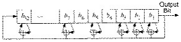
Figure 16.5 Galois LFSR.
In C, this looks like:
#define mask 0x80000057
static unsigned long ShiftRegister=1;
void seed_LFSR (unsigned long seed)
{
if (seed == 0) /* avoid calamity */
seed = 1;
ShiftRegister = seed;
}
int modified_LFSR (void)
{
if (ShiftRegister & 0x00000001) {
ShiftRegister = ((ShiftRegister ^ mask >> 1) | 0x8000000;
return 1;
} else {
ShiftRegister >>= 1;
return 0;
}
}
The savings here is that all the XORs can be done as a single operation. This can also be parallelized, and the different feedback polynomials can be different. The Galois configuration can also be faster in hardware, especially in custom VLSI implementations. In general, if you are using hardware that is good at shifts, use a Fibonacci configuration; if you can exploit parallelism, use a Galois configuration.
16.3 Design and Analysis of Stream Ciphers
Most practical stream-cipher designs center around LFSRs. In the early days of electronics, they were very easy to build. A shift register is nothing more than an array of bit memories and the feedback sequence is just a series of XOR gates. Even in VLSI circuitry, a LFSR-based stream cipher can give you a lot of security with only a few logic gates.
The problem with LFSRs is that they are very inefficient in software. You want to avoid sparse feedback polynomials — they facilitate correlation attacks [1051,1090,350] — and dense feedback polynomials are inefficient. Any stream cipher outputs a bit at a time; you have to iterate the algorithm 64 times to encrypt what a single iteration of DES can encrypt. In fact, a simple LFSR algorithm like the shrinking generator described later is no faster in software than DES.
This branch of cryptography is fast-paced and very politically charged. Most designs are secret; a majority of military encryptions systems in use today are based on LFSRs. In fact, most Cray computers (Cray 1, Cray X-MP, Cray Y-MP) have a rather curious instruction generally known as “population count.” It counts the 1 bits in a register and can be used both to efficiently calculate the Hamming distance between two binary words and to implement a vectorized version of a LFSR. I’ve heard this called the canonical NSA instruction, demanded by almost all computer contracts.
On the other hand, an astonishingly large number of seemingly complex shift-register-based generators have been cracked. And certainly military cryptanalysis institutions such as the NSA have cracked a lot more. Sometimes it’s amazing to see the simple ones proposed again and again.
Linear Complexity
Analyzing stream ciphers is often easier than analyzing block ciphers. For example, one important metric used to analyze LFSR-based generators is linear complexity, or linear span. This is defined as the length, n, of the shortest LFSR that can mimic the generator output. Any sequence generated by a finite-state machine over a finite field has a finite linear complexity [1006]. Linear complexity is important because a simple algorithm, called the Berlekamp-Massey algorithm, can generate this LFSR after examining only 2n bits of the keystream [1005]. Once you’ve generated this LFSR, you’ve broken the stream cipher.
This idea has extensions from fields to rings [1298], and when the output sequence is viewed as numbers over fields of odd characteristic [842]. A further enhancement is the notion of a linear complexity profile, which measures the linear complexity of the sequence as it gets longer and longer [1357,1168,411,1582]. Another algorithm for computing linear complexity is useful only in very specialized circumstances [597,595,596,1333]. A generalization of linear complexity is in [776]. There is also the notion of sphere complexity [502] and 2-adic complexity [844].
In any case, remember that a high linear complexity does not necessarily indicate a secure generator, but a low linear complexity indicates an insecure one [1357,1249].
Correlation Immunity
Cryptographers try to get a high linear complexity by combining the output of several output sequences in some nonlinear manner. The danger here is that one or more of the internal output sequences — often just outputs of individual LFSRs — can be correlated with the combined keystream and attacked using linear algebra. Often this is called a correlation attack or a divide-and-conquer attack. Thomas Siegenthaler has shown that correlation immunity can be precisely defined, and that there is a trade-off between correlation immunity and linear complexity [1450].
The basic idea behind a correlation attack is to identify some correlation between the output of the generator and the output of one of its internal pieces. Then, by observing the output sequence, you can obtain information about that internal output. Using that information and other correlations, collect information about the other internal outputs until the entire generator is broken.
Correlation attacks and variations such as fast correlation attacks — these offer a trade-off between computational complexity and effectiveness — have been successfully applied to a number of LFSR-based keystream generators [1451, 278, 1452, 572, 1636, 1051, 1090, 350, 633, 1054, 1089, 995]. Some interesting new ideas along these lines are in [46, 1641].
Other Attacks
There are other general attacks against keystream generators. The linear consistency test attempts to identify some subset of the encryption key using matrix techniques [1638]. There is also the meet-in-the-middle consistency attack [39,41]. The linear syndrome algorithm relies on being able to write a fragment of the output sequence as a linear equation [1636,1637]. There is the best affine approximation attack [502] and the derived sequence attack [42]. The techniques of differential cryptanalysis have even been applied to stream ciphers [501], as has linear cryptanalysis [631].
16.4 Stream Ciphers Using LFSRs
The basic approach to designing a keystream generator using LFSRs is simple. First you take one or more LFSRs, generally of different lengths and with different feedback polynomials. (If the lengths are all relatively prime and the feedback polynomials are all primitive, the whole generator is maximal length.) The key is the initial state of the LFSRs. Every time you want a bit, shift the LFSRs once (this is sometimes called clocking). The output bit is a function, preferably a nonlinear function, of some of the bits of the LFSRs. This function is called the combining function, and the whole generator is called a combination generator. (If the output bit is a function of a single LFSR, the generator is called a filter generator.) Much of the theoretical background for this kind of thing was laid down by Selmer and Neal Zierler [1647].
Complications have been added. Some generators have LFSRs clocked at different rates; sometimes the clocking of one generator depends on the output of another. These are all electronic versions of pre-WWII cipher machine ideas, and are called clock-controlled generators [641]. Clock control can be feedforward, where the output of one LFSR controls the clocking of another, or feedback, where the output of one LFSR controls its own clocking.
Although these generators are, at least in theory, susceptible to embedding and probabilistic correlation attacks [634,632], many are secure for now. Additional theory on clock-controlled shift registers is in [89].
Ian Cassells, once the head of pure mathematics at Cambridge and a former Bletchly Park cryptanalyst, said that “cryptography is a mixture of mathematics and muddle, and without the muddle the mathematics can be used against you.” What he meant was that in stream ciphers, you need some kind of mathematical structure — such as a LFSR — to guarantee maximal-length and other properties, and then some complicated nonlinear muddle to stop someone from getting at the register and solving it. This advice also holds true for block algorithms.
What follows is a smattering of LFSR-based keystream generators that have appeared in the literature. I don’t know if any of them have been used in actual cryptographic products. Most of them are of theoretical interest only. Some have been broken; some may still be secure.
Since LFSR-based ciphers are generally implemented in hardware, electronics logic symbols will be used in the figures. In the text, ⊕ is XOR, ∧ is AND, ∨ is OR, and ¬ is NOT.
Geffe Generator
This keystream generator uses three LFSRs, combined in a nonlinear manner (see Figure 16.6) [606]. Two of the LFSRs are inputs into a multiplexer, and the third LFSR controls the output of the multiplexer. If a1, a2, and a3 are the outputs of the three LFSRs, the output of the Geffe generator can be described by:

Figure 16.6 Geffe generator.
b = (a1 ∧ a2) ⊕ ((¬a1) ∧ a3)
If the LFSRs have lengths n1, n2, and n3, respectively, then the linear complexity of the generator is
(n1 + 1)n2 + n1n3
The period of the generator is the least common multiple of the periods of the three generators. Assuming the degrees of the three primitive feedback polynomials are relatively prime, the period of this generator is the product of the periods of the three LFSRs.
Although this generator looks good on paper, it is cryptographically weak and falls to a correlation attack [829,1638]. The output of the generator equals the output of LFSR-2 75 percent of the time. So, if the feedback taps are known, you can guess the initial value for LFSR-2 and generate the output sequence of that register. Then you can count the number of times the output of the LFSR-2 agrees with the output of the generator. If you guessed wrong, the two sequences will agree about 50 percent of the time; if you guessed right, the two sequences will agree about 75 percent of the time.
Similarly, the output of the generator equals the output of LFSR-3 about 75 percent of the time. With those correlations, the keystream generator can be easily cracked. For example, if the primitive polynomials only have three terms each, and the largest LFSR is of length n, it only takes a segment of the output sequence 37 n-bits long to reconstruct the internal states of all three LFSRs [1639].
Generalized Geffe Generator
Instead of choosing between two LFSRs, this scheme chooses between k LFSRs, as long as k is a power of 2. There are k + 1 LFSRs total (see Figure 16.7). LFSR-1 must be clocked log2k times faster than the other k LFSRs.
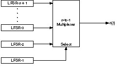
Figure 16.7 Generalized Geffe generator.
Even though this scheme is more complex than the Geffe generator, the same kind of correlation attack is possible. I don’t recommend this generator.
Jennings Generator
This scheme uses a multiplexer to combine two LFSRs [778,779,780]. The multiplexer, controlled by LFSR-1, selects 1 bit of LFSR-2 for each output bit. There is also a function that maps the output of LFSR-2 to the input of the multiplexer (see Figure 16.8).
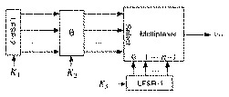
Figure 16.8 Jennings generator.
The key is the initial state of the two LFSRs and the mapping function. Although this generator has great statistical properties, it fell to Ross Anderson’s meet-in-the-middle consistency attack [39] and the linear consistency attack [1638,442]. Don’t use this generator.
Beth-Piper Stop-and-Go Generator
This generator, shown in Figure 16.9, uses the output of one LFSR to control the clock of another LFSR [151]. The clock input of LFSR-2 is controlled by the output of LFSR-1, so that LFSR-2 can change its state at time t only if the output of LFSR-1 was 1 at time t - 1.
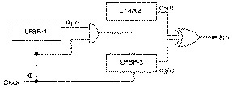
Figure 16.9 Beth-Piper stop-and-go generator.
No one has been able to prove results about this generator’s linear complexity in the general case. However, it falls to a correlation attack [1639].
Alternating Stop-and-Go Generator
This generator uses three LFSRs of different length. LFSR-2 is clocked when the output of LFSR-1 is 1; LFSR-3 is clocked when the output of LFSR-1 is 0. The output of the generator is the XOR of LFSR-2 and LFSR-3 (see Figure 16.10) [673].
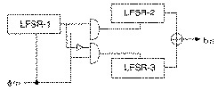
Figure 16.10 Alternating stop-and-go generator.
This generator has a long period and large linear complexity. The authors found a correlation attack against LFSR-1, but it does not substantially weaken the generator. There have been other attempts at keystream generators along these lines [1534,1574,1477].
Bilateral Stop-and-Go Generator
This generator uses two LFSRs, both of length n (see Figure 16.11) [1638]. The output of the generator is the XOR of the outputs of each LFSR. If the output of LFSR-2 at time t – 1 is 0 and the output at time t – 2 is 1, then LFSR-2 does not clock at time t. Conversely, if the output of LFSR-1 at time t – 1 is 0 and the output at t – 2 is 1, and if LFSR-1 clocked at time t, then LFSR-2 does not clock at time t.
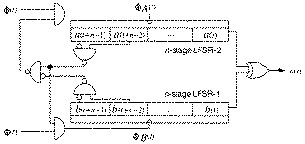
Figure 16.11 Bilateral stop-and-go generator.
The linear complexity of this system is roughly equal to the period. According to [1638], “no evident key redundancy has been observed in this system.”
Threshold Generator
This generator tries to get around the security problems of the previous generators by using a variable number of LFSRs [277]. The theory is that if you use a lot of LFSRs, it’s harder to break the cipher.
This generator is illustrated in Figure 16.12. Take the output of a large number of LFSRs (use an odd number of them). Make sure the lengths of all the LFSRs are relatively prime and all the feedback polynomials are primitive: maximize the period. If more than half the output bits are 1, then the output of the generator is 1. If more than half the output bits are 0, then the output of the generator is 0.
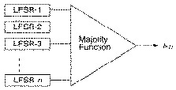
Figure 16.12 Threshold generator.
With three LFSRs, the output generator can be written as:
b = (a1 ∧ a2) ⊕ (a1 ∧ a3) ⊕ (a2 ∧ a3)
This is very similar to the Geffe generator, except that it has a larger linear complexity of
n1n2 + n1n3 + n2n3
where n1, n2, and n3 are the lengths of the first, second, and third LFSRs.
This generator isn’t great. Each output bit of the generator yields some information about the state of the LFSRs — 0.189 bit to be exact — and the whole thing falls to a correlation attack. I don’t recommend using it.
Self-Decimated Generators
Self-decimated generators are generators that control their own clock. Two have been proposed, one by Rainer Rueppel (see Figure 16.13) [1359] and another by Bill Chambers and Dieter Gollmann [308] (see Figure 16.14). In Rueppel’s generator, when the output of the LFSR is 0, the LFSR is clocked d times. When the output of the LFSR is 1, the LFSR is clocked k times. Chambers’s and Gollmann’s generator is more complicated, but the idea is the same. Unfortunately, both generators are insecure [1639], although some modifications have been proposed that may correct the problems [1362].
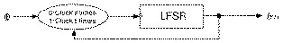
Figure 16.13 Rueppel’s self-decimated generator.

Figure 16.14 Chambers’s and Gollmann’s self-decimated generator.
Multispeed Inner-Product Generator
This generator, by Massey and Rueppel [1014], uses two LFSRs clocked at two different speeds (see Figure 16.15). LFSR-2 is clocked d times as fast as LFSR-1. The individual bits of the two LFSRs are ANDed together and then XORed with each other to produce the final output bit of the generator.
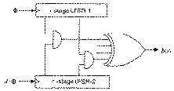
Figure 16.15 Multispeed inner-product generator.
Although this generator has high linear complexity and it possesses excellent statistical properties, it still falls to a linear consistency attack [1639]. If n1 is the length of LFSR-1, n2 is the length of the LFSR-2, and d is the speed multiple between the two, then the internal state of the generator can be recovered from an output sequence of length
n1 + n2 + log2d
Summation Generator
More work by Rainer Rueppel, this generator adds the output of two LFSRs (with carry) [1358,1357]. This operation is highly nonlinear. Through the late 1980s, this generator was the security front-runner, but it fell to a correlation attack [1053,1054,1091]. And it has been shown that this is an example of a feedback with carry shift register (see Section 17.4), and can be broken [844].
DNRSG
That stands for “dynamic random-sequence generator” [1117]. The idea is to have two different filter generators — threshold, summation, or whatever — fed by a single set of LFSRs and controlled by another LFSR.
First clock all the LFSRs. If the output of LFSR-0 is 1, then compute the output of the first filter generator. If the output of LFSR-0 is 0, then compute the output of the second filter generator. The final output is the first output XOR the second.
Gollmann Cascade
The Gollmann cascade (see Figure 16.16), described in [636,309], is a strengthened version of a stop-and-go generator. It consists of a series of LFSRs, with the clock of each controlled by the previous LFSR. If the output of LFSR-1 is 1 at time t - 1, then LFSR-2 clocks. If the output of LFSR-2 is 1 at time t - 1, then LFSR-3 clocks, and so on. The output of the final LFSR is the output of the generator. If all the LFSRs have the same length, n, the linear complexity of a system with k LFSRs is
n(2n - 1)k-1
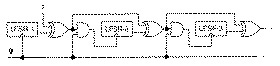
Figure 16.16 Gollmann cascade.
Cascades are a cool idea: They are conceptually very simple and they can be used to generate sequences with huge periods, huge linear complexities, and good statistical properties. They are vulnerable to an attack called lock-in [640]. This is a technique by which a cryptanalyst reconstructs the input to the last shift register in the cascade, then proceeds to break the cascade register by register. This is a serious problem in some situations and weakens the effective key length of the algorithm, but precautions can be taken to minimize the attack.
Further analysis has indicated that the sequence approaches random as k gets larger [637,638,642,639]. Based on recent attacks on short Gollmann cascades [1063], I recommend using a k of at least 15. You’re better off using more LFSRs of shorter length than fewer LFSRs of longer length.
Shrinking Generator
The shrinking generator [378] uses a different form of clock control than the previous generators. Take two LFSRs: LFSR-1 and LFSR-2. Clock both of them. If the output of LFSR-1 is 1, then the output of the generator is LFSR-2. If the output of LFSR-1 is 0, discard the two bits, clock both LFSRs, and try again.
This idea is simple, reasonably efficient, and looks secure. If the feedback polynomials are sparse, the generator is vulnerable, but no other problems have been found. Even so, it’s new. One implementation problem is that the output rate is not regular; if LFSR-1 has a long string of zeros then the generator outputs nothing. The authors suggest buffering to solve this problem [378]. Practical implementation of the shrinking generator is discussed in [901].
Self-Shrinking Generator
The self-shrinking generator [1050] is a variant of the shrinking generator. Instead of using two LFSRs, use pairs of bits from a single LFSR. Clock a LFSR twice. If the first bit in the pair is 1, the output of the generator is the second bit. If the first bit is 0, discard both bits and try again. While the self-shrinking generator requires about half the memory space as the shrinking generator, it is also half the speed.
While the self-shrinking generator also seems secure, it still has some unexplained behavior and unknown properties. This is a very new generator; give it some time.
16.5 A5
A5 is the stream cipher used to encrypt GSM (Group Special Mobile). That’s the non-American standard for digital cellular mobile telephones. It is used to encrypt the link from the telephone to the base station. The rest of the link is unencrypted; the telephone company can easily eavesdrop on your conversations.
A lot of strange politics surrounds this one. Originally it was thought that GSM’s cryptography would prohibit export of the phones to some countries. Now some officials are discussing whether A5 might harm export sales, implying that it is so weak as to be an embarrassment. Rumor has it that the various NATO intelligence agencies had a catfight in the mid-1980s over whether GSM encryption should be strong or weak. The Germans wanted strong cryptography, as they were sitting near the Soviet Union. The other countries overruled them, and A5 is a French design.
We know most of the details. A British telephone company gave all the documentation to Bradford University without remembering to get them to sign a nondisclosure agreement. It leaked here and there, and was eventually posted to the Internet. A paper describing A5 is [1622]; there is also code at the back of this book.
A5 consists of three LFSRs; the register lengths are 19, 22, and 23; all the feedback polynomials are sparse. The output is the XOR of the three LFSRs. A5 uses variable clock control. Each register is clocked based on its own middle bit, XORed with the inverse threshold function of the middle bits of all three registers. Usually, two of the LFSRs clock in each round.
There is a trivial attack requiring 240 encryptions: Guess the contents of the first two LFSRs, then try to determine the third LFSR from the keystream. (Whether this attack is actually feasible is under debate, but a hardware key search machine currently under design should resolve the matter soon [45].)
Nonetheless, it is becoming clear that the basic ideas behind A5 are good. It is very efficient. It passes all known statistical tests; its only known weakness is that its registers are short enough to make exhaustive search feasible. Variants of A5 with longer shift registers and denser feedback polynomials should be secure.
16.6 Hughes XPD/KPD
This algorithm is brought to you by Hughes Aircraft Corp. They put it in army tactical radios and direction-finding equipment for sale to foreign militaries. It was designed in 1986 and called XPD, for Exportable Protection Device. Later it was renamed KPD — Kinetic Protection Device — and declassified [1037,1036].
The algorithm uses a 61-bit LFSR. There are 210 different primitive feedback polynomials, which were approved by the NSA. The key selects one of these polynomials (they are all stored in ROM somewhere), as well as the initial state of the LFSR.
It has eight different nonlinear filters, each of which has six taps from the LFSR and which produces 1 bit. The bits combine to generate a byte, which is used to encrypt or decrypt the datastream.
This algorithm looks pretty impressive, but I doubt it is. The NSA allows export, so there must be some attack on the order of 240 or less. What is it?
16.7 Nanoteq
Nanoteq is a South African electronics company. This is their algorithm that has been fielded by the South African police to encrypt their fax transmissions, and presumably for other uses as well.
The algorithm is described, more or less, in [902,903]. It uses a 127-bit LFSR with a fixed feedback polynomial; the key is the initial state of the feedback register. The 127 bits of the register are reduced to a single keystream bit using 25 primitive cells. Each cell has five inputs and one output:
f(x1, x2, x3, x4, x5) = x1 + x2 + (x1 + x3) (x2 + x4 + x5) + (x1 + x4) (x2 + x3) + x5
Each input of the function is XORed with some bit of the key. There is also a secret permutation that depends on the particular implementation, and is not detailed in the papers. This algorithm is only available in hardware.
Is this algorithm secure? I doubt it. During the transition to majority rule, embarrassing faxes from one police station to another would sometimes turn up in the liberal newspapers. These could easily have been the results of U.S., U.K., or Soviet intelligence efforts. Ross Anderson took some initial steps towards cryptanalyzing this algorithm in [46]; I expect more results to come soon.
16.8 Rambutan
Rambutan is a British algorithm, designed by the Communications Electronics Security Group (one of the aliases used by GCHQ). It is only sold as a hardware module and is approved for the protection of classified material up to “Confidential.” The algorithm itself is secret, and the chip is not generally commercially available.
Rambutan has a 112-bit key (plus parity bits) and can operate in three modes: ECB, CBC, and 8-bit CFB. This strongly indicates that it is a block algorithm, but rumors point elsewhere. Supposedly, it is a LFSR stream cipher. It has five shift registers, each one of a different length around 80 bits. The feedback polynomials are fairly sparse, with only about 10 taps each. Each shift register provides four inputs to a very large and complex nonlinear function which eventually spits out a single bit.
Why call it Rambutan? Perhaps, like the fruit, it’s spiny and forbidding on the outside but soft and yielding inside. On the other hand, maybe that’s not the reason.
16.9 Additive Generators
Additive generators (sometimes called lagged Fibonacci generators) are extremely efficient because they produce random words instead of random bits [863]. They are not secure on their own, but can be used as building blocks for secure generators.
The initial state of the generator is an array of n- bit words: 8-bit words, 16-bit words, 32-bit words, whatever: X1, X2, X3, ..., Xm. This initial state is the key. The ith word of the generator is
Xi = (Xi-a + Xi-b + Xi-c + ... + Xi-m) mod 2n
If the coefficients a, b, c, ..., m are chosen right, the period of this generator is at least 2n - 1. One of the requirements on the coefficients is that the least significant bit forms a maximal-length LFSR.
For example, (55,24,0) is a primitive polynomial mod 2 from Table 16.2. This means that the following additive generator is maximal length.
Xi = (Xi-55 + Xi-24) mod 2n
This works because the primitive polynomial has three coefficients. If it has more than three, you need some additional requirements to make it maximal length. See [249] for details.
Fish
Fish is an additive generator based on techniques used in the shrinking generator [190]. It produces a stream of 32-bit words which can be XORed with a plaintext stream to produce ciphertext, or XORed with a ciphertext stream to produce plaintext. The algorithm is named as it is because it is a Fibonacci shrinking generator.
First, use these two additive generators. The key is the initial values of these generators.
Ai = (Ai-55 + Ai-24) mod 232 Bi = (Bi-52 + Bi-19) mod 232
These sequences are shrunk, as a pair, depending on the least significant bit of Bi: if it is 1, use the pair; if it is 0, ignore the pair. Cj is the sequence of used words from Ai, and Dj is the sequence of used words from Bi. These words are used in pairs — C2j, C2j+1, D2j, and D2j+1 — to generate two 32-bit output words: K2j and K2j+1.
E2j = C2j ⊕ (D2j ∧ D2j+1) F2j = D2j+1 ∧ (E2j ∧ C2j+1) K2j = E2j ⊕ F2j K2i+1 = C2i+1 ⊕ F2j
This algorithm is fast. On a 33 megahertz 486, a C implementation of Fish encrypts data at 15 megabits per second. Unfortunately, it is also insecure; an attack has a work factor of about 240 [45].
Pike
Pike is a leaner, meaner version of Fish, brought to you by Ross Anderson, the man who broke Fish [45]. It uses three additive generators. For example:
Ai = (Ai-55 + Ai-24) mod 232 Bi = (Bi-57 + Bi-7) mod 232 Ci = (Ci-58 + Ci-19) mod 232
To generate the keystream word, look at the addition carry bits. If all three agree (all are 0 or all are 1), then clock all three generators. If they do not, just clock the two generators that agree. Save the carry bits for next time. The final output is the XOR of the three generators.
Pike is faster than Fish, since on the average 2.75 steps will be required per output rather than 3. It is far too new to trust, but looks good so far.
Mush
Mush is a mutual shrinking generator. It’s easy to explain [1590]. Take two additive generators: A and B. If the carry bit of A is set, clock B. If the carry bit of B is set, clock A. Clock A, and set the carry bit if there is a carry. Clock B, and set the carry bit if there is a carry. The final output is the XOR of the output of A and B.
The easiest generators to use are the ones from Fish:
Ai = (Ai-55 + Ai-24) mod 232 Bi = (Bi-52 + Bi-19) mod 232
On the average, three generator iterations are required to produce one output word. And if the coefficients of the additive generators are chosen correctly and are relatively prime, the output sequence will be maximal length. I know of no successful attacks, but remember that this algorithm is very new.
16.10 Gifford
David Gifford invented a stream cipher and used it to encrypt news wire reports in the Boston area from 1984 until 1988 [608,607,609]. The algorithm has a single 8-byte register: b0, b1, ..., b7. The key is the initial state of the register. The algorithm works in OFB; the plaintext does not affect the algorithm at all. (See Figure 16.17).
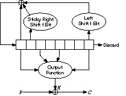
Figure 16.17 Gifford.
To generate a key byte ki, concatenate b0 and b2 and concatenate b4 and b7. Multiply the two together to get a 32-bit number. The third byte from the left is ki.
To update the register, take b1 and sticky right shift it 1 bit. This means the left-most bit is both shifted and also remains in place. Take b7 and shift it 1 bit to the left; there should be a 0 in the right-most bit position. Take the XOR of the modified b1, the modified b7, and b0. Shift the original register 1 byte to the right and put this byte in the left-most position.
This algorithm remained secure throughout its life, but was broken in 1994 [287]. It turns out that the feedback polynomial isn’t primitive and can be attacked that way — oops.
16.11 Algorithm M
The name is from Knuth [863]. It’s a method for combining multiple pseudo-random streams that increases their security. One generator’s output is used to select a delayed output from the other generator [996,1003]. In C:
#define ARR_SIZE (8192) /* for example — the larger the better */
static unsigned char delay[ ARR_SIZE ] ;
unsigned char prngA( void ) ;
long prngB( void ) ;
void init_algM( void )
{
long i ;
for ( i = 0 ; i < ARR_SIZE ; i++ )
delay = prngA() ;
} /* init_algM */
unsigned char algM( void )
{
long j,v ;
j = prngB() % ARR_SIZE ; /* get the delay[] index */
v = delay[j] ; /* get the value to return */
delay[j] = prngA() ; /* replace it */
return ( v ) ;
} /* algM */
This has strength in that if prngA were truly random, one could not learn anything about prngB (and could therefore not cryptanalyze it). If prngA were of the form that it could be cryptanalyzed only if its output were available in order (i.e., only if prngB were cryptanalyzed first) and otherwise it was effectively truly random, then the combination would be secure.
16.12 PKZIP
Roger Schlafly designed the encryption algorithm built into the PKZIP data compression program. It’s a stream cipher that encrypts data one byte at a time. At least, this is the algorithm in version 2.04g. I can’t speak for later versions, but unless there is some announcement you can probably assume that they are identical.
The algorithm uses three 32-bit variables, initialized as follows:
K0 = 305419896 K1 = 591751049 K2 = 878082192
It has an 8-bit key, K3, derived from K2. Here is the algorithm (all symbols are standard C notation):
Ci = Pi ^ K3 K0 = crc32(K0, Pi) K1 = K1 + (K0 & 0x000000ff) K1 = K1 * 134775813 + 1 K2 = crc32(K2, K1 >> 24) K3 = ((K2|2) * ((K2|2) ^ 1)) >> 8
The function crc32 takes the previous value and a byte, XORs them, and calculates the next value by the CRC polynomial denoted by 0xedb88320. In practice, a 256-entry table can be precomputed and the crc32 calculation becomes:
crc32(a, b) = (a >> 8) ^ table[(a & 0×ff) ⊕ b]
The table is precomputed by the original definition of crc32:
table[i] = crc32(i, 0)
To encrypt a plaintext stream, first loop the key bytes through the encryption algorithm to update the keys. Ignore the ciphertext output in this step. Then encrypt the plaintext, one byte at a time. Twelve random bytes are prepended to the plaintext, but that’s not really important. Decryption is similar to encryption, except that Ci is used in the second step of the algorithm instead of Pi.
Security of PKZIP
Unfortunately, it’s not that great. An attack requires 40 to 200 bytes of known plaintext and has a time complexity of about 227 [166]. You can do it in a few hours on your personal computer. If the compressed file has any standard headers, getting the known plaintext is no problem. Don’t use the built-in encryption in PKZIP.